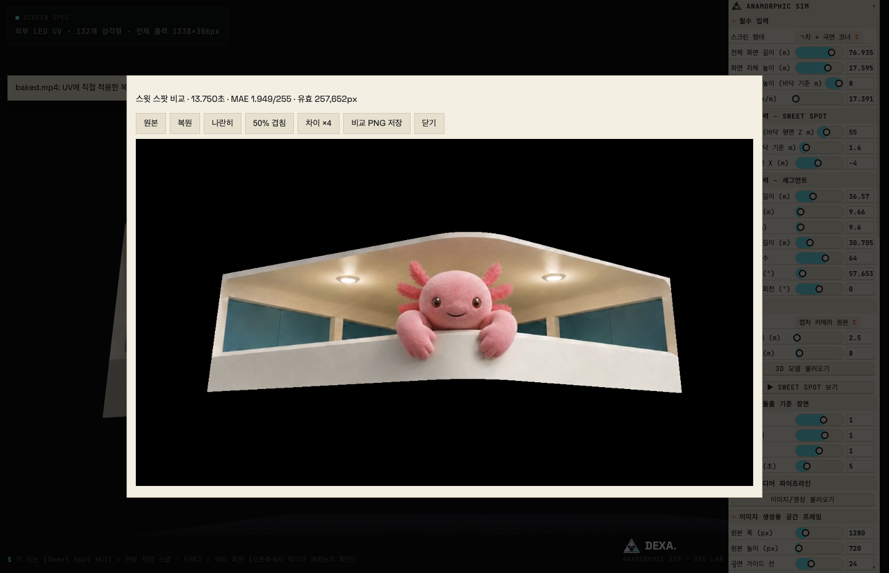
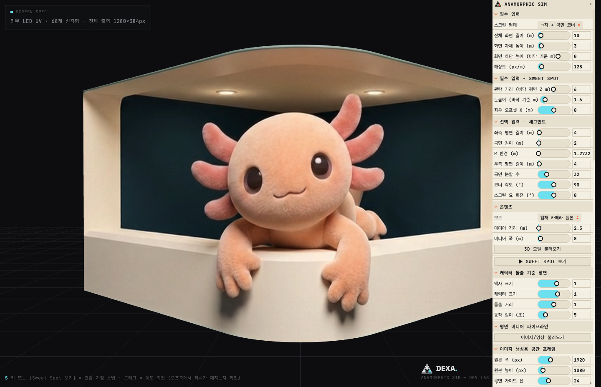
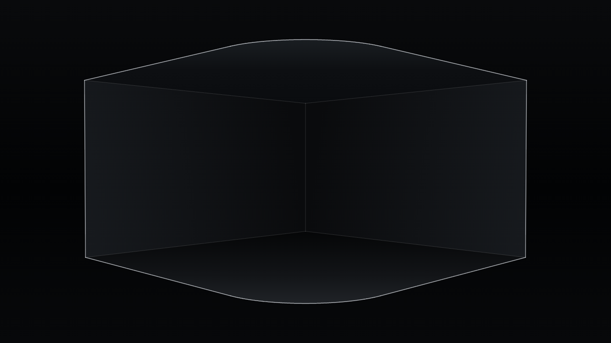

기술 협업
실제 미디어월 환경에서 제작·출력 흐름을 공동 테스트하고, 화면 형상과 관람 조건에 맞는 적용 방법을 검토합니다.
협업 문의전문 3D 제작 경험이 없어도,
AI 영상으로 아나모픽 연출을 시작할 수 있도록.
제작비와 전문 기술의 문턱 때문에 콘텐츠가 부족했던 미디어월에도 입체감 있는 영상을 채울 수 있도록. 화면에 맞는 가이드와 AI 영상, 시뮬레이션과 출력을 하나의 제작 흐름으로 잇습니다.
실제 제작 흐름 보기같은 출력 프레임을 두 시점에서 비교해 보세요.

3D 시뮬레이션을 준비하고 있습니다.
공개 화면 규격 기반의 예시입니다. 건물과 관람 위치는 가정했으며, AI 영상의 한 프레임을 표시합니다.

화면 형상과 관람 위치를 설정하고 AI 제작 결과를 불러온 화면입니다. 제작 과정과 같은 예제를 사용한 앱 캡처이며, 이미지를 누르면 크게 볼 수 있습니다.
FOR 콘텐츠 사각지대의 미디어월
운영자 · 영상 제작자 · 설치·납품 파트너
01 / WHY WE BUILD
미디어월은 설치했지만, 화면에 맞는 콘텐츠를 꾸준히 채우기는 어렵습니다. 전문 제작에 드는 비용과 기술의 문턱은 새로운 입체 연출을 시도하는 데에도 장벽이 됩니다.
Anamorphic Sim은 이런 콘텐츠 사각지대를 줄이기 위해 만드는 도구입니다. 화면과 관람 위치에 맞는 가이드로 AI 영상을 제작하고, 결과를 미리 확인해 화면용 파일로 출력합니다.
제작에 드는 시간과 비용을 줄이고,
새로운 아이디어를 더 자주 시도하는 것.
이 도구가 지향하는 변화입니다.
02 / FROM IDEA TO SCREEN
같은 제작 예제의 실제 파일로 과정을 살펴보세요.
AI 원본과 화면용 UV 베이크 출력을 비교할 수 있습니다.
화면 크기·형상과 관람 위치를 정하고, AI 제작에 사용할 가이드 이미지를 만듭니다.

외부 AI 이미지·영상 도구로 장면을 만듭니다. 창작자가 구도와 움직임을 선택하고 다듬습니다.
완성한 영상을 다시 불러와 LED 화면의 펼친 형태에 맞게 변환합니다. 평면에서는 왜곡되어 보이는 이 영상을 실제 화면에 재생합니다.
아나모픽 효과는 화면 형상과 관람 위치에 따라 달라집니다. 실제 설치에는 해당 화면의 규격과 현장 확인이 필요합니다.
03 / WORK TOGETHER
함께 시험하고, 만들고, 가르치는 방법을 찾습니다.
공간과 참여자에 맞춰 협업 범위를 논의합니다.
04 / GOOD TO KNOW
현재 개발 마무리와 공개 준비를 진행 중입니다. 기본 도구는 오픈소스로 공개할 계획이며, 시연이나 협업 논의는 아래 문의 폼을 이용해 주세요.
AI 영상은 외부 생성 도구에서 제작합니다. Anamorphic Sim은 제작 가이드 생성과 결과 확인, 화면에 맞춘 출력을 이어주는 도구입니다.
제작비와 전문 인력의 부담으로 새로운 콘텐츠를 마련하기 어려운 미디어월을 생각하며 만들고 있습니다. 화면의 크기보다, 콘텐츠 사각지대에 있는 화면에도 AI 영상을 활용해 입체감 있는 콘텐츠를 채울 수 있도록 하는 것이 목표입니다.
현재 평면과 곡면 코너를 포함한 ㄱ자 화면을 다룹니다. 아나모픽 효과는 화면 형상과 관람 위치에 맞춰 설계하며, 복합 곡면이나 특수한 화면은 별도 검토가 필요합니다.
LET’S MAKE IT SPATIAL.
공간과 화면, 만들고 싶은 콘텐츠를 알려주세요.
기술 협업·교육·작품 제작을 함께 논의합니다.